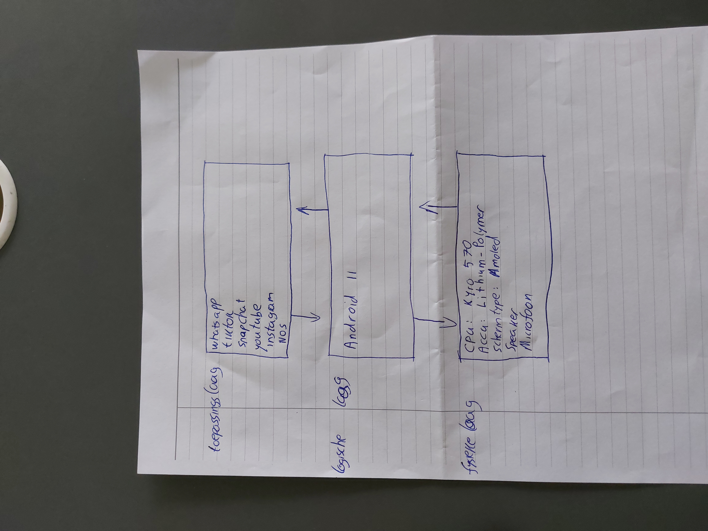

Een telefoon bestaat uit 3 lagen: de fysieke laag, de logische laag en de toepassingen laag
De fysieke laag bestaat uit alle onderdelen van de telefoon, dingen zoals de accu en touchscreen vallen hieronder
De logische laag is de software die de telefoon aanstuurd.
Dit maakt het mogelijk voor apps om te werken.
Voor een telefoon geld dat de logische laag vooral uit het besturinssysteem bestaat zoals andriod of IOS.
De toepassingen laag bestaat uit alle apps op je telefoon.
De verschillende lagen werken samen door middel van interfaces.
Dit zijn de verbindingen tussen de lagen en maakt communicatie tussen de verschillende lagen mogelijk.
Dit is het 3lagenmodel van de samsung galaxy A52

homepage
pagina Fysiekelaag